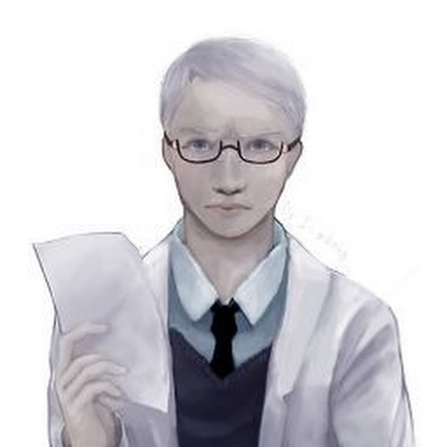
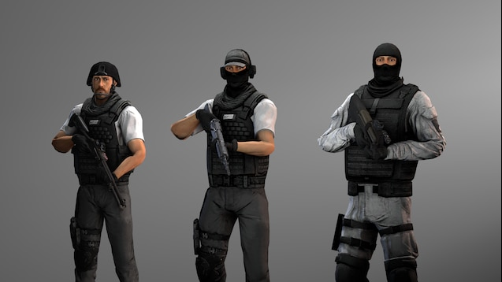

Доктор Лакшми Агарвал: Специалист-этолог, отличается замкнутостью и повышенной тревожностью. Не вполне ясным образом связана с опасной сущностью класса "Кетер". Лояльность Фонду — под вопросом, связь романтического характера с субъектом — предполагается, связь с "Дланью Змея" — возможна.
Доктор Чарльз Анборо: Директор Зон 59 и 117, специалист по содержанию объектов класса "Кетер". Несмотря на имеющиеся травмы, остаётся любопытным физиком-ядерщиком, не пропускающим ни одной катастрофической ситуации. К счастью, благодаря удивительному сочетанию импровизации и везения он лучше всех справляется с ними. За печальной улыбкой и суховатым юмором скрывается сложный путь человека, всегда ищущего ответы.
Как же я тебя ненавижу!
Доктор Джек Брайт: Директор кадровой службы Фонда. В определённой степени аморален. Исключительно лоялен Организации. Может быть или не быть дружелюбным и/или устрашающим; определённо грубоват. Ввиду связи с SCP-963 бессмертен, будучи способен использовать тело любого существа, последним соприкасавшегося с 963.
Я давно уже здесь.
Доктор Джанго Бридж: Архивист Фонда. Говорит редко, но веско, отличается меланхоличностью и богатым воображением. Исключительная память. На "ты" с доктором Брайтом, часто выступает в роли его неформального ассистента.
Доктор Чарльз Гирс ("КОГ"): Человек со странно сниженной эмоциональной реакцией (вплоть до отсутствия естественной реакции удивления) и при этом обладающий необычно развитым интеллектом и логическим мышлением. До расширения области исследований был специалистом по изучению объектов класса "Евклид". Принимал активное участие в исследовании огромного количества самых различных SCP-объектов. Одна из наиболее значимых фигур недавней истории Фонда.
Задавать подобные вопросы неприемлемо.
Доктор Саймон Гласс: Главный психолог. Проводит психологические консультации высокопоставленных сотрудников Фонда. Отличается высокой эмпатией. Иногда считается "мягким" — и для исследователя Фонда это действительно так, но всё же он находится на хорошем счету. В ходе проводимых интервью, узнал немало страшных тайн, сумев сохранить здравый рассудок и эмпатию.
(Я беседую со всеми, всех знаю...)

Административная служба
Административная служба во главе с Советом О5 осуществляет общее руководство всеми сферами деятельности Фонда на всех уровнях. К этой службе относятся все ключевые узлы связи и командные центры, каждый из которых продублирован. Также в ведении АС находится управление всеми финансовыми ресурсами Фонда, как то: распределение средств, бухгалтерский учёт, планирование бюджета и т.п. Ввиду особой важности все работающие здесь сотрудники чаще подвергаются проверкам на лояльность. Помимо основных отделов, административная служба имеет внутреннее подразделение, ответственное за все виды канцелярских работ и работ по делопроизводству, а также за выполнение архивных функций.
Инженерно-техническая служба
Инженерно-техническая служба отвечает за техническое и бытовое обслуживание любых учреждений и техники, используемых в Фонде SCP. Именно эта служба занимается проектированием и строительством новых Зон, Секторов, Участков, других сооружений и внутренних путей сообщения, а также всеми видами ремонта и обслуживания. Сотрудники ИТС разделены на несколько отделов с различающимися уровнями допуска и назначениями; сотрудники с более высокими уровнями допуска, соответственно, проектируют и возводят камеры содержания для объектов класса «Кетер», а также работают с другими стратегическими сооружениями.
Комитет по этике
Комитет по этике представляет собой небольшую независимую контору, занимающуюся рецензированием особых условий содержания и проверкой проводимых экспериментов на предмет избыточного или нецелевого расхода сотрудников класса D и других ресурсов. Несмотря на то, что многие сотрудники Фонда считают неудачной шуткой само существование Комитета, он играет достаточно важную роль в жизни Фонда и имеет большое влияние.
Медицинская служба
Медицинская служба Фонда SCP отвечает за поддержание всех сотрудников Фонда в добром здравии. Из-за специфики работы Организации медикам приходится регулярно сталкиваться с самыми трудными и зачастую специфическими случаями ранений, травм, инфекций и психических расстройств, вследствие чего в медицинскую службу вербуют только самых лучших врачей. Некоторые медики Фонда после определённого периода работы получают ту или иную дополнительную специальность, связанную непосредственно с воздействием того или иного типа, например, меметического.
Мобильные оперативные группы
Ввиду специфики работы Фонда SCP существует необходимость во множестве специалистов достаточно узкого профиля. Обычно это относится к SCP-объектам, требующим значительных усилий для успешного сдерживания, равно как и нестандартного подхода. Для этих и других целей формируются Мобильные оперативные группы. Мобильные оперативные группы представляют собой небольшие отряды (обычно от десяти до тридцати человек, хотя существуют и группы с гораздо большим числом оперативников), специализирующиеся на выполнении определённых задач или занимающиеся особыми ситуациями. Каждой группе присваивается уникальная комбинация из буквы греческого алфавита и номера . На данный момент в Фонде SCP числится мобильных опергрупп.
Научная служба
Эффективная работа научной службы является краеугольным камнем деятельности Фонда SCP. Научная служба занимается исследованием всех содержащихся и поступающих на содержание SCP-объектов, разработкой мер по противодействию и нейтрализации в случае нарушений условий содержания, а также разрабатывает различное оборудование, устройства, препараты и многое другое для самой Организации, впоследствии все эти разработки передаются производственной службе. В НС отбирают только наиболее выдающихся учёных из самых различных областей науки.
Отдел внешних связей (ОВС)
В обязанности отдела внешних связей входит самый широкий спектр работ: дезинформация, уничтожение следов активности SCP-объектов и самой Организации, набор контингента класса D, а также вербовка сотрудников в гражданских и военных учреждениях. Именно ОВС занимается разработкой прикрытий для агентов и учреждений Фонда, находящихся в густонаселённых регионах. ОВС – это своего рода первая линия обороны Фонда, поскольку именно отдел внешних связей фильтрует всех новых сотрудников и несёт ответственность за качество вербуемого персонала, выполняя функции отдела кадров.
Отдел внутренней безопасности (ОВБ)
ОВБ является глубоко законспирированной «организацией в Организации», аналогом тайной полиции, и занимается выявлением в рядах сотрудников Фонда предателей, а также легкомысленных и прочих ненадёжных лиц. В отделе выстроена строгая иерархия сотрудников, обеспечивающая несколько этапов проверки подозреваемых. Вербуемые для работы на ОВБ сотрудники должны иметь блестящий послужной список и проработать на Фонд не менее года. Как правило, каждый завербованный сотрудник остаётся на своём «белом» рабочем месте, чтобы держать командование в курсе событий, происходящих в том или ином подразделении. «Легальной» стороной деятельности отдела внутренней безопасности является следственная работа и выбивание показаний из пленных членов враждебных группировок, однако в конспиративных целях эта ячейка ОВБ официально относится к службе безопасности.
site SCP Сайт информации,
Pate two(вторая стрница),
Pate tree(третья страница),
Pate one,
Cannel voidRUS,
Cannel voidENG